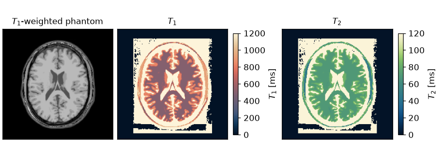
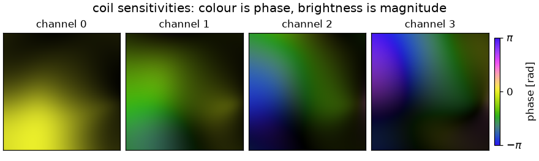
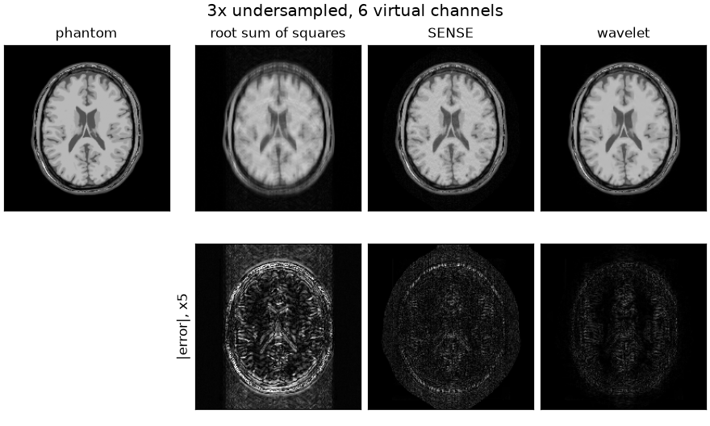

Note
Go to the end to download the full example code.
From k-space to image#
Reconstruction of an undersampled Cartesian acquisition, from the measured k-space to a coil-combined image.
The acquisition is simulated from a BrainWeb tissue segmentation and the eight channels of BART’s head coil model, sampled at a third of the Nyquist rate along the phase-encode direction. The reconstruction consists of channel compression, sensitivity calibration by ESPIRiT, and a regularized least-squares fit of the SENSE model
with \(S\) the coil sensitivities, \(F\) the Fourier transform and \(P\) the sampling operator. The MRI encoding operator states the model and Inverse problems and their solvers the estimator.
Shapes here are C order, so a Cartesian k-space is (coils, z, y, x) and an
axis argument indexes that shape; see Data layout and conventions.
import csv
from pathlib import Path
import brainweb_dl
import numpy as np
import torch
from brainweb_dl import get_mri
import bartorch
import bartorch.tools as bt
from bartorch import priors
Phantom#
BrainWeb [1] publishes a segmentation rather than an image: one membership map
per tissue class, from which a table of relaxation times and proton
densities gives the signal of a chosen acquisition. The volume
brainweb-dl returns is indexed (inferior-superior, posterior-anterior,
left-right), so its first axis selects an axial slice, and an image is
drawn from its first row down, so flipping it puts anterior at the top.
SIZE = 192
COILS = 8
SLICE = 90 # axial, through the lateral ventricles
TISSUES = (1, 2, 3, 4, 5, 6, 8) # everything the table gives relaxation times
table = Path(brainweb_dl.__file__).parent / "data" / "brainweb1_tissues.csv"
entries = list(csv.DictReader(table.open()))
tissue_t1 = np.array([float(row["T1 (ms)"]) for row in entries], dtype=np.float32)[list(TISSUES)]
tissue_t2 = np.array([float(row["T2 (ms)"]) for row in entries], dtype=np.float32)[list(TISSUES)]
tissue_pd = np.array([float(row["PD (ms)"]) for row in entries], dtype=np.float32)[list(TISSUES)]
fractions = np.flipud(get_mri(sub_id=0, contrast="fuzzy")[SLICE])[..., list(TISSUES)].copy()
The slice is cropped to a square field of view around the head and resampled to the matrix reconstructed here. The crop leaves a margin, as a real field of view does: the aliased copies of an undersampled acquisition then fall partly outside the head.
MARGIN = 0.25
A membership-weighted average of the table gives \(T_1\), \(T_2\) and the proton density at every voxel, and the spin-echo signal
turns those into the image the experiment measures. At a short repetition time and a short echo time the contrast is \(T_1\)-weighted: white matter bright, cerebrospinal fluid dark, subcutaneous fat brightest of all.
TR, TE = 600.0, 12.0 # ms
weights = memberships * torch.as_tensor(tissue_pd)[:, None, None]
share = weights.sum(0).clamp(min=1e-6)
T1 = (weights * torch.as_tensor(tissue_t1)[:, None, None]).sum(0) / share
T2 = (weights * torch.as_tensor(tissue_t2)[:, None, None]).sum(0) / share
proton_density = weights.sum(0) / weights.sum(0).max()
signal = (
proton_density * (1 - torch.exp(-TR / T1.clamp(min=1e-3))) * torch.exp(-TE / T2.clamp(min=1e-3))
)
signal = torch.where(T1 > 0, signal, torch.zeros(()))
signal = signal / signal.max()
# A smooth quadratic phase stands in for the transmit and off-resonance phase
# of a real object, so that nothing below depends on the image being real.
grid_y, grid_x = torch.meshgrid(
torch.linspace(-1.0, 1.0, SIZE), torch.linspace(-1.0, 1.0, SIZE), indexing="ij"
)
image = (signal * torch.exp(0.8j * (grid_x**2 - 0.5 * grid_y**2))).to(torch.complex64)
Coils#
The sensitivities are BART’s analytical head coil, evaluated on the image
grid that bartorch.tools.grid() describes. Dividing by the root sum of
squares over the channels makes the combination of the coil images the image
itself, so a reconstruction can be compared against it directly.
sensitivities = bt.coils(t=bt.grid(D=(SIZE, SIZE, 1)), n=COILS)[:, 0]
sensitivities = sensitivities / bartorch.rss(sensitivities, axes=(0,), keepdim=True)
coil_images = sensitivities * image
kspace = bartorch.fft(coil_images, axes=(-2, -1), unitary=True)
kspace = bt.noise(kspace, n=1e-5, s=42)


The relaxation maps are drawn with the perceptually uniform colormaps recommended for relaxometry [2] – lipari for \(T_1\), navia for \(T_2\) – so that one is not read as the other, and with a window that stops short of cerebrospinal fluid, which is far enough from the rest to take the whole scale. The sensitivities are complex, and are drawn the way a sensitivity is read: a cyclic colormap for the phase, brightness for the magnitude.
Sampling#
The readout is fully sampled and the phase encodes are drawn at random from a variable density, with a 24-line calibration region at the centre kept in full. ESPIRiT reads its calibration matrix from that region, so an acquisition that omitted it would need a separate calibration scan.
ACCELERATION = 3
CALIBRATION = 24
encodes = torch.arange(SIZE) - SIZE // 2
profile = (1.0 + 2.0 * encodes.abs() / SIZE) ** -3.0
centre = (encodes.abs() < CALIBRATION // 2).to(torch.float32)
drawn = torch.multinomial(
profile * (1.0 - centre),
SIZE // ACCELERATION - CALIBRATION,
replacement=False,
generator=torch.Generator().manual_seed(11),
)
lines = centre.clone()
lines[drawn] = 1.0
# A pattern broadcasts over one channel's samples, so a column of it
# undersamples the phase-encode axis for every channel.
pattern = lines.reshape(SIZE, 1).to(torch.complex64)
measured = kspace[:, None] * pattern
print(f"{float(lines.mean()):.0%} of the phase encodes acquired")
33% of the phase encodes acquired
Channel compression#
Eight channels carry less independent information than eight images: the
sensitivities overlap, and the singular value spectrum of the calibration
matrix falls off. bartorch.tools.cc() returns the matrix that projects
the channels onto their leading singular vectors [3], and
bartorch.tools.ccapply() applies it. Everything downstream –
calibration, the encoding operator, every iteration – then costs six
channels rather than eight.
VIRTUAL = 6
matrix = bt.cc(measured, p=VIRTUAL, M=True, r=CALIBRATION)
compressed = bt.ccapply(measured, matrix, p=VIRTUAL)
Sensitivity calibration#
ESPIRiT [4] estimates the sensitivities as the leading eigenvector, per voxel, of
an operator built from the calibration region. crop discards the voxels
whose eigenvalue falls below it, and so keeps the maps from being
extrapolated into the background.
maps = bt.ecalib(compressed, maps=1, calib_size=CALIBRATION, crop=0.8)
Reconstruction#
bartorch.tools.pics() solves the regularized least-squares problem. A
Tikhonov weight alone gives the conjugate-gradient SENSE reconstruction
[5]; an \(\ell_1\) penalty on the wavelet coefficients is the
compressed-sensing reconstruction [6] of the same data, solved by
FISTA [7]. Both are compared against
the root sum of squares of the zero-filled channel images, which uses no
model of the encoding.
channel_images = bartorch.ifft(compressed[:, 0], axes=(-2, -1), unitary=True)
gridded = bartorch.rss(channel_images, axes=(0,))
sense = bt.pics(compressed, maps, l2=0.001, maxiter=60)
wavelet = bt.pics(
compressed,
maps,
regularizers=priors.Wavelet((-1, -2), 0.002),
solver="fista",
maxiter=100,
)
The sensitivities ESPIRiT estimates and the ones the acquisition was
simulated with differ by a phase that varies from voxel to voxel, so the
reconstructed image does too, and the comparison is between magnitudes.
pics returns the image in the units of the data it scaled, so
bartorch.tools.nrmse() is called with scaled=True, which fits a
global factor before comparing.
root sum of squares NRMSE 0.126 SSIM 0.693
SENSE NRMSE 0.055 SSIM 0.847
wavelet NRMSE 0.032 SSIM 0.977

The root sum of squares carries the aliasing of the missing phase encodes. The Tikhonov-regularized SENSE fit removes the coherent aliasing but leaves noise amplification and incoherent residual artefacts of the variable-density random sampling. The wavelet \(\ell_1\) penalty reduces both, which the NRMSE printed above quantifies.
How much it removes depends on its weight, which is chosen here and not estimated: a larger one removes more noise and more texture with it.
The same reconstruction written as an encoding operator and a solver, rather than as a call to a BART application, is the subject of Operators and solvers.
References#
Total running time of the script: (0 minutes 3.938 seconds)